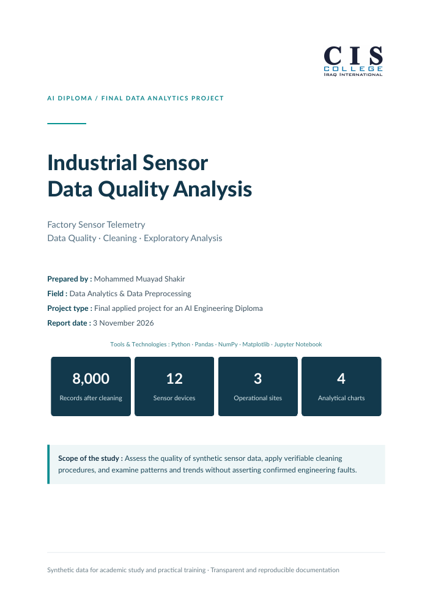

Exact duplicates
Repeated rows removed, keeping the first occurrence.
PROJECT / INSIDE THE FACTORY
Factory Sensor Telemetry
A practical study of industrial sensor data — from quality inspection to evidence-led insights.
Illustrative sensor network · Historical synthetic data · Not a live feed

OPEN THE REPORTTHE FULL STORY
Read the methodology, quality findings, visual evidence and limitations in English or Arabic.
Prepared by Mohammed Muayad Shakir · 3 November 2026
INSIDE THE DATASET
January–February 2023
12 devices across NOR, RIV and SLT
The Datanemics Factory Sensor Telemetry dataset simulates industrial readings. A separate working copy contains deliberately introduced quality issues for training. The original source is preserved alongside the cleaned result.
Original records
Raw records
Cleaned records
| Field | Meaning | Unit / values |
|---|---|---|
reading_at | Recorded timestamp | Source described as UTC; CSV has no explicit timezone |
device_id | Sensor device identifier | 12 devices |
site | Device location | NOR / RIV / SLT |
status | Recorded operating label | OK / WARN / FAULT |
temp_c | Temperature | °C |
humidity_pct | Relative humidity | % |
vibration_mm_s | RMS vibration velocity | mm/s |
rpm | Rotational speed | revolutions per minute |
QUALITY INSPECTION
Repeated rows removed, keeping the first occurrence.
Ten missing cells in each measurement column, retained without imputation.
Thousands separators removed before numeric conversion.
Twelve site entries and twelve status entries standardised.
THE PROCESS
Check dimensions, types, missingness, duplicates and category consistency. Keep the original dataset unchanged.
Remove exact duplicate rows, parse dates, standardise site and status labels, and convert RPM to numeric values.
Do not automatically delete outliers, fill missing measurements or invent readings inside time gaps.
Check record keys, categories and missing-value locations. Save the cleaned CSV, reload it, and compare the actual values.
WHAT THE DATA SHOWS
NOR has the highest mean vibration at 3.3592 mm/s. Excluding MCH-04 and MCH-10 from this comparison lowers its mean to 2.7033 mm/s.
This sensitivity check shows how two devices influence the site average. It does not establish a mechanical fault.
The temperature–vibration Pearson correlation is 0.6232 overall. Among readings labelled OK, it is 0.3093.
The weaker relationship within that subset is a reason to investigate context rather than infer causation from the overall correlation.
MCH-04 and MCH-10 show upward daily mean vibration trends. Their estimated slopes are approximately 0.0540 and 0.0487 mm/s/day.
These are exploratory trend estimates, not validated engineering alarm limits.
The global IQR check flags 89 temperature readings. An additional comparison of OK-based global and device-specific references changes the classification of 46 records.
Outlier labels depend on the reference distribution. A flagged value is a prompt to investigate, not proof of bad data.
Eight long gaps occur in four RIV devices and are also present in the original source. The estimate of 468 potentially unrecorded readings assumes a regular two-hour schedule; it is conditional, not a confirmed missing-record count.
REFLECTION
This project connected Python practice with a complete analytical workflow. I learned to separate formatting problems from unusual measurements, test assumptions, and make cleaning decisions traceable.
The next step is to explore machine learning with a clearly defined target and evaluation strategy. No model has been trained as part of this study.
EXPLORE THE WORK
The complete methodology, results and limitations.
The complete methodology, results and limitations.
Exploratory work, visualizations and analytical checks.
Documented transformations and integrity checks.
Datasets, notebooks, charts, documentation and report.
Dataset source credited in the project: Datanemics · Source licence recorded as CC0 1.0. See the documentation for scope and assumptions.
THE JOURNEY CONTINUES